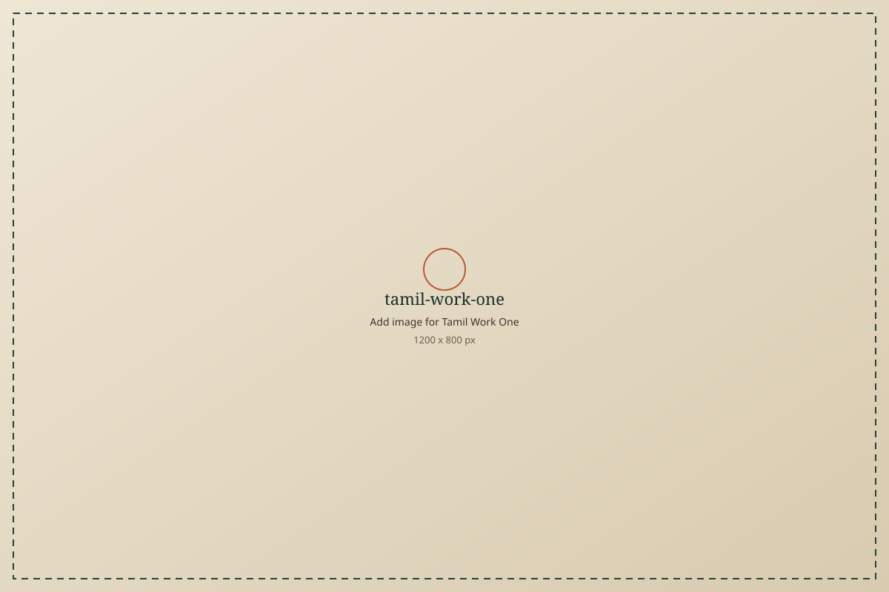
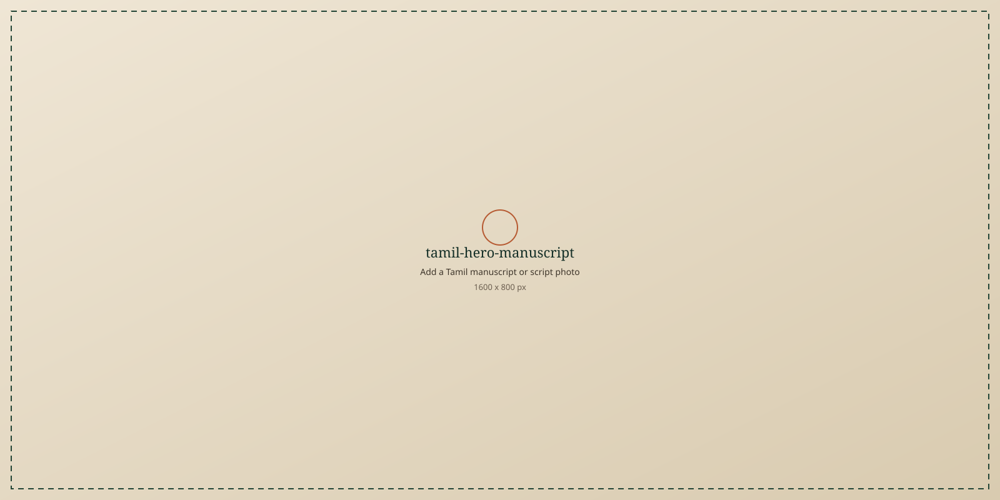
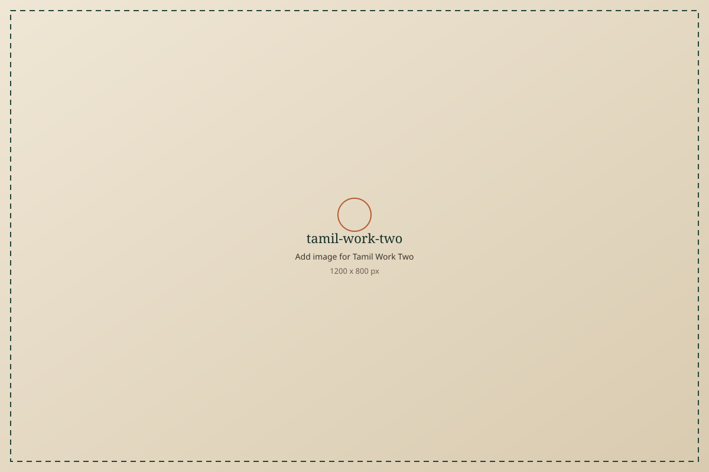
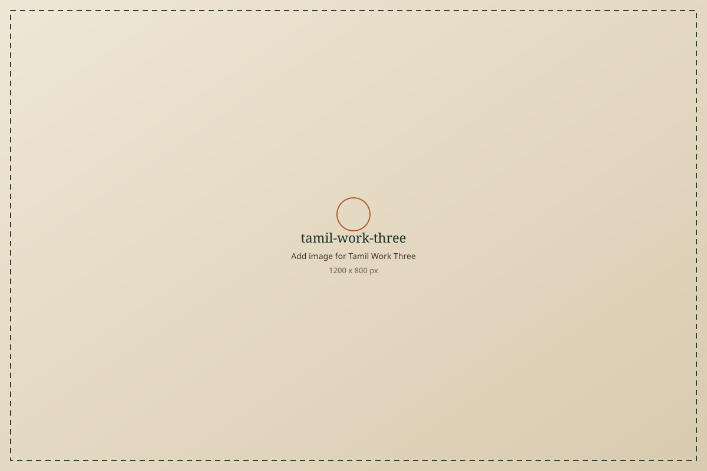

tamil-work-onetamil-title-one தமிழ்ப் பணி தலைப்பு ஒன்று
tamil-body-one
Teaching, a workshop, a reading circle, a dictionary note, or a script practice. Describe the first Tamil-language effort.
மொழிப் பணி
தமிழைக் கற்பித்தல், எழுதுதல், பேணுதல், பகிர்தல் — உங்கள் மொழிப் பணியை இங்கே பதிவு செய்யுங்கள்.


tamil-work-oneTeaching, a workshop, a reading circle, a dictionary note, or a script practice. Describe the first Tamil-language effort.

tamil-work-twoWriting, translation, or community work that keeps Tamil in daily use. Describe the second effort.

tamil-work-threeArchiving, publishing, or helping others read and write Tamil. Describe the third effort.
தமிழ் உங்களுக்கு என்ன பொருள்? இங்கே ஒரு குறுகிய அறிக்கையை எழுதுங்கள் — வீடு, நினைவு, இலக்கியம், எதிர்காலம்.